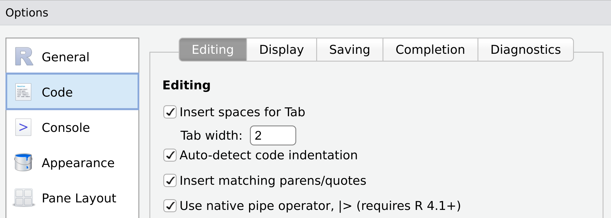

В данном разделе мы познакомимся с основами пакета tidyverse — это набор пакетов, из которых мы уделим внимание следующим:
tibble, для работы с тибблами, современный вариант датафрейма
dplyr, для преобразования данных
tidyr, для преобразование таблиц к формату опрятных данных (tidy data)
library(tidyverse)
── Attaching core tidyverse packages ──────────────────────── tidyverse 2.0.0 ──
✔ dplyr 1.1.4 ✔ readr 2.1.5
✔ forcats 1.0.0 ✔ stringr 1.5.0
✔ ggplot2 3.5.1 ✔ tibble 3.2.1
✔ lubridate 1.9.2 ✔ tidyr 1.3.1
✔ purrr 1.0.1
── Conflicts ────────────────────────────────────────── tidyverse_conflicts() ──
✖ dplyr::filter() masks stats::filter()
✖ dplyr::lag() masks stats::lag()
ℹ Use the conflicted package (<http://conflicted.r-lib.org/>) to force all conflicts to become errors
При загрузке пакета обычно появляется сообщение о версиях некоторых входящих в него пакетов и о конфликтующих функциях. Не стоит обращать на него внимание. Данные материалы не претендуют на полный охват, для дальнейшего ознакомления рекомендую третью и пятую главы из (Wickham, Çetinkaya-Rundel, and Grolemund 2023).
2.1tibble
Современный вариант датафрейма называется тиббл и отличается от классического тем, как он печатается в консоли и некоторыми дополнительными возможностями. Для его создания нужно в функцию tibble() подать именованные векторы:
Мы будем использовать tibble() для саздания таблиц, но чаще всего мы будем считывать данные при помощи функций read_csv(), read_tsv() и прочих, которые по умолчанию преобразуют таблицу в формат tibble.
2.2 Использование конвейера (пайпа)
В нашем коде мы часто будем использовать знаки конвейера (или пайпа): |> (также можно встретить популярный ранее %>%). Чтобы вставлять новый конвейер придется сделать изменение в настройках RStudio (Tools > Global Options > вкладка Code):

конвейер призван показывать последовательность действий. Сочетание клавиш для написания конвейера: Ctrl/Cmd + Shift + M (хотя RStudio позволяет горячие клавиши переназначить).
Выражения с конвейерами можно запускать частями и смотреть, что на каком этапе трансформации данных получилось. Это полезно при поиске ошибок.
2.3 Функции семейства slice()
Дальше мы посмотрим на фрагмент данных из “Исследования дразнилки”Жадина-говядина” издания N+1, где исследовались социолингвистические аспекты, влияющие на тенденцию к тому или иному продолжению. Переменные word_1, word_2 и word_3 соотвествуют разным вариантам начала, переменная type описывает классификацию, которую варианту дали исследователи, а переменная n отвечает за количество этих вариантов в данных.
Первые функции tidyverse, которые будут нас интересовать, — это функции семейства slice(). Функция slice() позволяет фильтровать нужные строчки датасета по индексу:
zhadina |>slice(c(6, 25, 3))
zhadina |>slice(6:25)
Стоит обратить внимание на то, что результат работы функции выводится в консоль. Чтобы сохранить результат работы, следует сделать операцию приписывания одним из следующих способов (первый наиболее распространенный):
Кроме того, есть функции slice_head() и slice_tail(), которые выдают первое/последнее наблюдение. Аргумент n позволяет донастроить, сколько первых/последних наблюдений хочется вывести:
zhadina |>slice_head()
zhadina |>slice_tail()
zhadina |>slice_tail(n =6)
Стоит отметить, что совпадение имени аргумента и названия столбца в нашем датасете (n) никак не влияет на работу функции. Также полезными могут быть функции slice_max() и slice_min(), которые выдают максимальное/минимальное значение переменной. У этих функции тоже есть аргумент n:
zhadina |>slice_max(n)
zhadina |>slice_min(n)
zhadina |>slice_max(n, n =3)
Функция slice_sample() позволяет вывести выборку из некоторого количества строчек (аргумент n) или долю строчек (аргумент prop):
zhadina |>slice_sample(n =10)
zhadina |>slice_sample(prop =0.3)
2.4 Функция filter()
Функция filter() позволяет отфильтровывать строки таблицы по одному или нескольким условиям.
zhadina |>filter(n >100)
zhadina |>filter(n <100)
zhadina |>filter(n <=100) # меньше или равно
zhadina |>filter(n >=100) # больше или равно
zhadina |>filter(n !=10) # не равно
zhadina |>filter(n ==10) # равно (дважды знак равно)
zhadina |>filter(word_3 =="шоколадина")
zhadina |>filter(word_3 !="шоколадина")
zhadina |>filter(nchar(word_3) ==7)
Кроме того, условия можно перечислить через запятую (аналог логического “и”):
zhadina |>filter(n >15, n <100)
Логическое “или” обозначается палочкой |:
zhadina |>filter(n <15| n >100)
2.5 Функции count(), distinct(), arrange()
Функция count() очень полезна в разведочном анализе, так как позволяет посчитать сколько какое значение переменной или группы переменных встретилось в датасете. Аргумент sort позволяет дополнительно отсортировать результат от большего к меньшему.
zhadina |>count(word_3)
zhadina |>count(word_3, sort =TRUE)
zhadina |>count(word_1, word_2, sort =TRUE)
Функция distinct() позволяет вывести уникальное значение переменной или все уникальные комбинации значений нескольких переменных, встретившихся в датасете:
zhadina |>distinct(word_3)
zhadina |>distinct(word_1, word_2)
Функция arrange() позволяет отсортировать одну или несколько переменных от меньшего к большему (если нужно наоборот — используйте функцию desc()). Числовые переменные сортируются по значениям, а строковые по алфавиту (с учетом особенностей локали, см. Раздел 4.5):
zhadina |>count(word_3) |>arrange(n)
zhadina |>count(word_3) |>arrange(desc(n))
zhadina |>count(word_3) |>arrange(-n)
zhadina |>count(word_3) |>arrange(word_3)
2.6 Функция select()
Функция select() позволяет выбрать из датасета некоторый набор столбцов.
zhadina |>select(word_1, type, n)
Внутри функции select() можно использовать функции, которые позволяют не только перечислять через запятую необходимые столбцы, но и выделять их по имени:
zhadina |>select(starts_with("word"))
zhadina |>select(ends_with("1"))
zhadina |>select(matches("ord"))
Кроме того, внутри функции select() действует оператор двоеточие, который мы видели при создании векторов 5:10:
zhadina |>select(word_3:n) # от колонки word_3 до колонки n
2.7 Функция mutate()
Функция mutate() позволяет создавать и изменять уже имеющиеся переменные:
Функция relocate() позволяет перемещать переменные в таблице (по умолчанию в начало):
zhadina |>relocate(type)
Если хочется перемещать в какое-то другое место, то можно использовать аргументы .after и .before:
zhadina |>relocate(n, .after = word_3)
zhadina |>relocate(n, .before = type)
2.9 Функция group_by() |> summarise() и group_by() |> mutate()
Все предыдущие операции работали со строками и столбцами таблиц. В этом разделе мы познакомимся с операцией группировки, которая позволяет разделять таблицу на группы и агрегировать информацию по этим группам. Функция group_by() разделяет на группы, но саму структуру и содержание таблицы не меняет, однако при печати выводится сообщение об имени группирующей переменной и числа групп:
zhadina |>group_by(type)
После группировки можно использовать функцию summarise() (или ее американский вариант summarize()), которая возвращает по одному значению на каждую группу. Например, посчитаем среднее количество встречаемости для каждого типа:
Кроме того, функцию group_by() или аргумент .by можно использовать в связке с функцией mutate(). В таком случае саммаризирующий результат будет выведен не единожды для каждой группы, а присоединен к исходной таблице в виде новой переменной.
Не так часто, но все же бывает, что в большом длинном конвейере, который совмещает в себе много действий, группировка может мешать, так что ее можно снять функцией ungroup():
Функция across() позволяет применять одно и то же изменение к группе колонок, которые выбираются набором функций, сходных с операциями для функции select(). Важно отметить, что трансформация обычно описывается функцией, и имя функции обычно пишут без круглых скобок.
Основная концепция пакет tidyverse строится вокруг понятия “опрятный формат” (tidy data). Это понятие означает приведение табличных данных к такому формату, в котором:
каждая переменная имеет собственный столбец;
каждое наблюдение имеет собственную строку;
каждое значение имеет свою собственную ячейку.
Такое представление данных делает любые трансформации и визуализацию делом нескольких строк.
Однако данный подход не дает четких инструкций по поводу того, что делать с наблюдениями похожего типа, которые сделаны по поводу одной единицы. Рассмотрим на примере данных количества носителей разных языков Индии:
Rows: 12 Columns: 5
── Column specification ────────────────────────────────────────────────────────
Delimiter: ","
chr (1): language
dbl (4): n_L1_sp, n_L2_sp, n_L3_sp, n_all_sp
ℹ Use `spec()` to retrieve the full column specification for this data.
ℹ Specify the column types or set `show_col_types = FALSE` to quiet this message.
india_langauges_wide
Сейчас данные в так называемом широком формате. Хинди в датасете встречается единожды, но значения сколько носителей выучили его как первый/второй/третий/все вместе записаны в виде отдельных столбцов.
Теперь данные представлены в длинном формате, который удобен для визуализации и каких-то трансформаций. Хинди встречается в датасете четырежды, однако информация про то, какая группа носителей имеется в виду записана в переменную L. Более того, столбец n_all_sp изначально был лишним, так как эта информация уже содержится как сумма всех остальных столбцов. Мы можем отфильтровать значения n_all_sp и получить их снова:
Функции bind_rows() и bind_cols() позволяют соединять несколько таблиц. Функция bind_rows() присоединяет таблицу снизу, при этом она должна иметь столько же переменных и тип переменных должен совпадать с основной таблицей.
Иногда возникает ситуация, когда нужно соединить две таблицы на основании одного или нескольких общих столбцов. Так бывает, если нужно что-то включить или исключить из анализа. Примером включения может послужить случай, когда для построения карты хочется присоединить расшифровку аббревиатур, или для анализа нужны еще какие-то данные, например, размер популяции. Примером исключения могут послужить случаи, когда при анализе текстов возникает необходимость удаления служебных слов. Эти задачи решают функции семейства ..._join().
Синтаксис функций выглядит так (A и B — датафреймы):
A |>..._join(B)
Вместо многоточия может стоять одна из следующих функций:
inner_join() — возвращает только те наблюдения в А, которым есть соответствие в B
full_join() — возвращает все наблюдения из А и из B
left_join() — возвращает все наблюдения из А, а если им нет соответствия в B, то появляется NA. Наблюдения из B, которым нет соответствия в А, исключаются.
right_join() — возвращает все наблюдения из B, а если им нет соответствия в A, то появляется NA. Наблюдения из A, которым нет соответствия в B, исключаются.
anti_join() — возвращает все наблюдения из А, которым нет соответствия в B.
semi_join() — возвращает все наблюдения из А, которым есть соответствия в B, но при этом игнорирует дополнительные столбцы из B.
Все эти объединения можно проиллюстрировать при помощи диаграмм Венна:
В качестве примера создадим новую таблицу на основе датасета продолжений Жадины-говядины:
Мы видим, что таблицы соединились, а также появилось сообщение о том, что соединение произошло по переменной type. Если мы исключим одно наблюдение из нашей таблицы type_new_var и соединим, то на месте пропусков появятся NA:
Если же мы присоединим к таблице type_new_var строчку, которой нет в нашем исходном датасете продолжений Жадины-говядины, мы получи разный результат при присоединении разными функциями. При присоединении функцией left_join() новой строчки не будет (26 строчек), а если мы будем присоединять при помощи full_join(), то она будет (27 строчек).
Если мы хотим исключить наблюдения с типом шоколадина, то мы можем использовать функцию anti_join (я бы в такой задаче использовал простой фильтр, но мы на курсе еще встретим случаи, когда быстрее написать anti_joint()).
zhadina |>anti_join(tibble(type ="шоколадина"))
Joining with `by = join_by(type)`
Последнее, что важно обсудить в данном разделе — что если переменные в разных таблицах по разному называются? В таком случае можно не переименовывать переменные, а эксплицитно указать изменения в аргументе by: